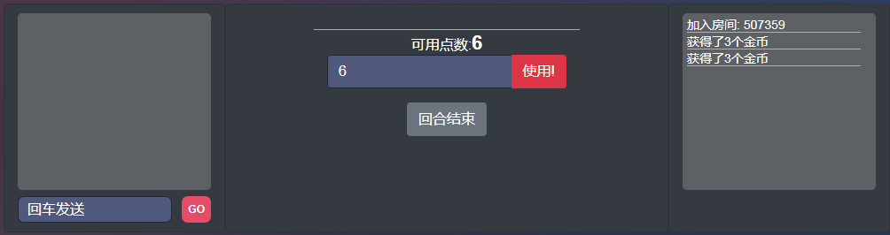

React+Antd music platform
React+Antd音乐平台
Project source code:
项目链接:
HERE
Pretty inconvinent each time when searching music between different platforms. So tring to merge these operations together.
由于每次听歌或者搜索都要去各个网站去搜，感觉很不方便，于是就想如果能整合到一起就太好啦
Useing react & antd as the front-end, and node as the back-end server. Currently use only qq and neteast music.
基于react和antd的音乐平台作为前端，使用node所谓后端服务发送请求，当前只关联了网易云和qq音乐
Roglike game test
Roglike地牢类游戏测试
Project source code:
项目链接:
HERE
Trying to implement a roglike game with Django as the back-end. User will interact with webapp, and the game can be saved(not only on local storage)
尝试使用Django作为后端搭建一个roglike的游戏，通过前端页面作为用户交互调用后端接口，以此实现可保存的功能
Under heavy construction
正在施工中...
Vue Draw card & battle
Vue在线抽卡对战
Available at:
项目链接:
HERE
A turn-based Trading card game system for two players. DB now include up to 300 characters
回合制TCG卡牌类游戏。数据库内现有300多个角色。
The website use socket to connect players. A basic chat system is also included within the room
网站使用socket连接两名玩家。房间内还包含一个基础的聊天室功能。
Players will use trading system to buy/sell card. detail attribute will pop up while a player click on each Character.
玩家将通过交易系统来购买/卖出卡牌。当玩家点击每个角色时，会显示详细的卡牌属性。

A basic "battle field" board is implemented in "battle" phase.
在战斗阶段可以使用一个基本的"战场"。

Available at:
项目链接:
HERE
Senior Design – Astral Raiders
毕业设计 – Astral Raiders
Astral Raiders is an action tower defense game for the Microsoft Hololens. It is an Augmented Reality(AR) game which will bring unique game experience to the players.
AstralRaiders是一个基于微软Hololens平台的塔防游戏项目。这是一款AR(增强现实)游戏，它能够为玩家带来独特的游戏体验。
A small spacecraft crashes into the player's room where the ship's captain tells the player he's being followed by space pirates. The player must collect different items from around the room and create defensive items to defend the ship from incoming space enemies. When enemies are killed, they may drop loot such as new objects for the player to collect.
一个小型宇宙飞船撞上了玩家的房间。船长告诉玩家他正在被太空海盗追踪。玩家需要从房间中收集不同的零件并建造炮塔用以抵挡飞船免受海盗的攻击。当敌人被击毁时，他们亦会掉落可用的零件。
The game is developed with Unity.
该项目使用Unity开发.
Latest code package:
工程文件:
Not available at this time